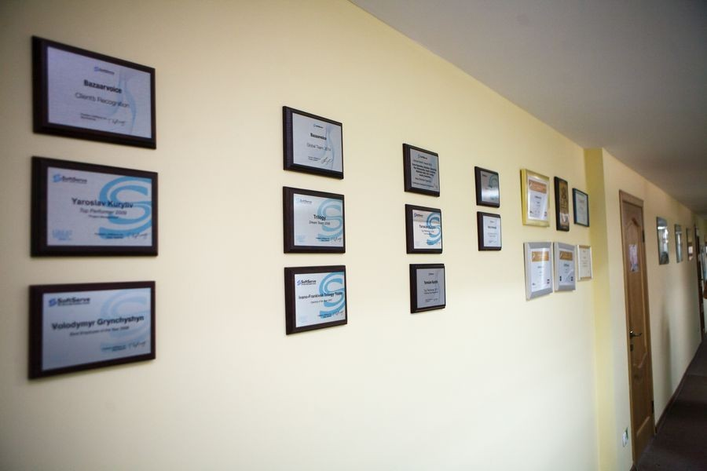

| Про нас | Про погоду ... здається дощик починається | Про сумне...курс валют | Із досвіду роботи |
 SoftServe - найбільша глобальна IT-компанія з українським корінням, яка спеціалізується у сфері розробки програмного забезпечення та надання косультаційних послуг. З 19993 року SoftServe співпрацює з організаціями від розміру стартапів до великих компаній, допомагаючи їм у їхньому розвитку та інноваційності.
SoftServe визнана кращим роботодавцем України 2010-2015 років та здобула визнання понад 350 компаній всього світу, серед яких відомі бренди США, Канади та Західної Європи.
SoftServe - компанія, у якій працює понад 4000 професіоналів у різних сферах ІТ. Розробницькі ценри розташовані у Львові, Дніпропетровську, Рівному, Івано-Франківську, Чернівцях, Києві, Харкові, Софії(Болгарія), Вроцлаві(Польща).